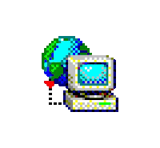
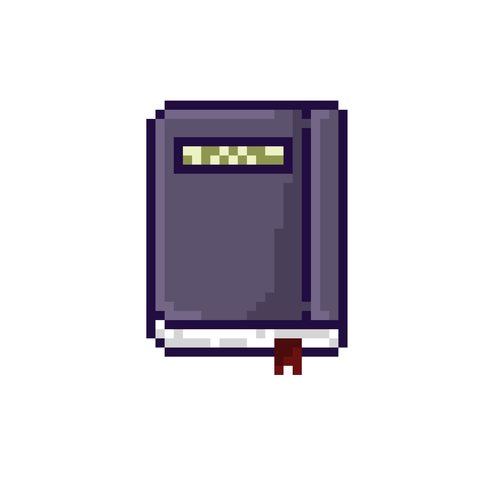

About me
My name's Olaf, but friends call me Sushi. I learn IT at school but I do coding in my free time. I code mostly in C, C++ and JavaScript, but I also learn Kotlin. When I code I mostly do embedded systems, networking or retro demos for the DMG, GBA, C64 and sometimes SNES.
Other hobbies
I play retro games, collect old consoles and tech. In my collection I have old laptops from mid 90s-00s, floppies, Nokia phones, cassettes (both music and C64). From consoles I have the C64, GBA, PS2, SMS-II. I also have a Toshiba T2130CS with original MS-DOS 6.22 installed that I play DOS games from floppies on.
Socials

Sushi's IRC,
Bubs (Bubbles) Scratch
My other websites
